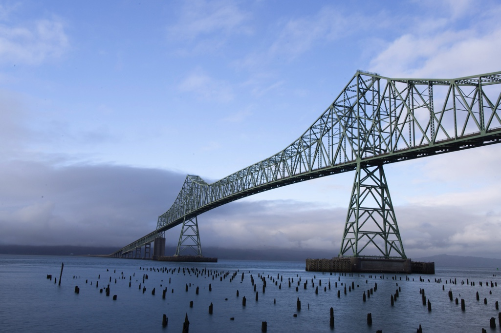

Photo Galleries



Structures
And other photos from farther travels
Steve discovered his love of photography as a boy, growing up in the beautiful Pacific Northwest. He has experimented with all different styles of cameras and technologies through the years. From his first Brownie camera to the newest Canon R5, there is always something interesting in the frame.
You can find him on the road in his outfitted pickup, in search of the next adventure. Steve is particularly drawn to the dramatic farm fields appreciated during his college years in the Palouse country of Washington State. He will detour, however, for any potential landscape, structure or funny "friend" along the way.
Enjoy the journey with Steve!